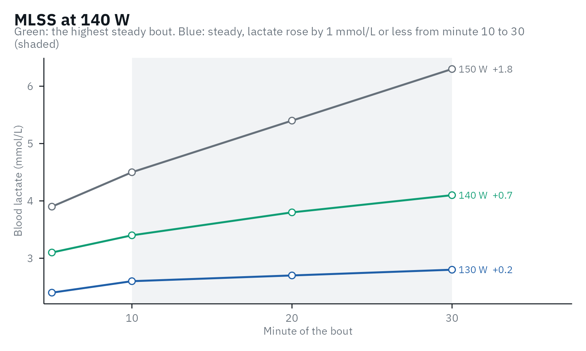

Beyond the step test: MLSS and VLamax
Source:vignettes/articles/beyond-the-step-test.Rmd
beyond-the-step-test.RmdA step test estimates two things it cannot measure directly. Its second threshold is meant to find the maximal lactate steady state (MLSS), which only constant-load bouts can confirm, and where its curve lies depends partly on the maximal lactate accumulation rate (V̇Lamax), which comes from a short sprint. This article covers both tests.
The maximal lactate steady state (MLSS)
The MLSS is the highest constant intensity at which blood lactate stays steady. The idea comes from German sports medicine in the 1970s. Mader et al. (1976) proposed 4.0 mmol/L in a step test as the mark of the transition from aerobic to partly anaerobic metabolism: below it, they wrote, lactate stays constant or falls when the load is held, and above about 5 mmol/L it keeps rising. To test it, Heck and co-workers had men of varying fitness run on a treadmill at several constant speeds near that point, each run a 3-min warm-up and 25 min at the speed, with earlobe lactate every 5 min, and took the highest speed at which lactate stayed steady. They called it “maximales Laktatgleichgewicht” in 1982 (Heck et al., 1982; Heck & Wackerhage, 2024), and in English, in 1985, the maximal lactate steady state: the speed at which lactate does not rise by “any more than 1 mmol/l during the last 20 min”. In their 16 men it lay at 4.0 mmol/L on average, as Mader had predicted, but from 3.1 to 5.5 mmol/L between athletes (Heck et al., 1985). Heck himself stresses that it is the highest steady state of blood lactate, which need not be that of metabolism as a whole (Heck & Wackerhage, 2024), a point the studies below return to.
Measuring it
The test has changed little since. Comparing the criteria in use on
26 men, Beneke
(2003) recommended constant-load bouts of at least 30 min, on
separate days, with a rise of no more than 1.0 mmol/L after the 10th
minute. The MLSS then lies between the highest steady bout and the next
one up, so the closer the bouts, the more precise the result.
lactate_mlss() applies this rule to a table of bouts, one
row per sample, with lactate sampled at or around minutes 10 and 30,
and, given the result of a step test of the same athlete, it also tells
how far each threshold lies from the MLSS:
bouts <- data.frame(
intensity = rep(c(130, 140, 150), each = 4),
time = rep(c(5, 10, 20, 30), 3),
lactate = c(2.4, 2.6, 2.7, 2.8, 3.1, 3.4, 3.8, 4.1, 3.9, 4.5, 5.4, 6.3)
)
step_test <- lactate_threshold(demo_data, intensity, lactate, plot = FALSE)
mlss <- lactate_mlss(bouts, step_test)
mlss
#> 3 constant-load bouts, steady when lactate rose by 1 mmol/L or less from minute 10 to 30.
#> MLSS at 140 W: the next bout (150 W) was not steady.
#> Closest thresholds: ModDmax (+0 W), OBLA 3.5 (-1 W), Exp-Dmax (-5 W).
autoplot(mlss)
Which threshold lands closest depends on the protocol and the
athletes: in the studies reviewed in The methods and the
evidence, the gap of a method ranged from about 2 to 49 W. Collected
over a group of your own athletes, the gaps in
mlss$thresholds answer the question for your protocol.
The MLSS and the critical power
Whether the MLSS marks the boundary between the heavy and the severe domains has mostly been tested against the critical power (CP). When Keir et al. (2015) measured both in 12 men, they found the same power (223 and 226 W), and both matched in oxygen uptake the respiratory compensation point (RCP) and the deoxyhemoglobin breakpoint of a ramp test, even though those two came at a higher power in the ramp (262 and 273 W). Mattioni Maturana et al. (2016), in contrast, found the MLSS of 13 healthy young adults (233 W) 17 to 20 W below CP, whether CP came from five time-to-exhaustion trials or from a 3-min all-out test, and the two CP estimates agreed poorly with each other (limits of agreement -39 to 31 W). Asked to ride 30 min at the highest power they thought sustainable, the same participants chose 233 W, which matched their MLSS within 20 W either way, while CP overestimated it by 20 W (Mattioni Maturana et al., 2017).
Much of this disagreement comes from how each is determined. Iannetta et al.
(2022) compared several CP models and several windows for the
lactate rise with the highest steady oxygen uptake of 10 men cycling,
243 W on average. With the rise judged from minute 15 or 20, the MLSS
lay 2 W above it on average, against 8 W below from minute 10, and the
best CP models 1 to 5 W above. Every method still missed it in some
participants: at the MLSS from minute 15 or 20, oxygen uptake was steady
in 7 of the 10, against 9 from minute 10.
lactate_mlss(from = 20) uses such a later window. Across 10
studies, CP lay 12 W above the MLSS on average, with 95% limits of
agreement from -19 to 44 W (Micheli et al., 2025),
and Jones et al.
(2019) argue that CP, rather than the MLSS as usually measured,
marks the maximal metabolic steady state.
Where several 30-min bouts are not practical, a ramp test with gas exchange offers a shortcut. Iannetta et al. (2018) built an equation in 60 people from the RCP (in W/kg), the peak oxygen uptake and body mass, and it predicted the MLSS of 29 new participants with a standard error of 5 W. The RCP has to be found first: Keir et al. (2022) explain how to identify it and the first threshold from gas exchange, and their Exercise Thresholds App does it on your own data.
The maximal lactate accumulation rate (V̇Lamax)
V̇Lamax comes from its own test, a short all-out sprint, not from the step test:
\dot{V}\text{La}_{\text{max}} = \frac{\text{La}_{\text{peak}} - \text{La}_{\text{pre}}}{t_{\text{test}} - t_{\text{alactic}}}
Take a lactate sample before the sprint and every minute for several
minutes after it; the highest value is the peak. vlamax()
does the arithmetic:
vlamax(lactate_pre = 1.1, lactate_post = c(8.9, 10.4, 10.9, 10.6, 10.1), test_duration = 15)
#> # A tibble: 1 × 5
#> vlamax vlapeak lactate_peak delta_lactate glycolytic_time
#> <dbl> <dbl> <dbl> <dbl> <dbl>
#> 1 0.852 0.653 10.9 9.8 11.5The alactic time is the part of the sprint assumed to be covered by phosphocreatine. In 50 cyclists, fixing it at 3.5 s gave the most reliable V̇Lamax (ICC 0.91, CV 3.1%), while estimating it from the power curve did not (CV 12-26%); a 1-s change in it can change V̇Lamax by up to 26% (Meixner et al., 2024). Protocols differ widely between studies (Langley et al., 2025), and whether V̇Lamax measures the maximal glycolytic rate is still debated: in 11 cyclists it added little beyond the power of the sprint itself (Clark & Macdermid, 2025). Compare V̇Lamax only within the same protocol, ergometer and analyzer.
vlamax() assumes a 15-s sprint by default, as in Meixner
et al. (2024) and most cycling studies. A review of 60 studies
recommends a sport-specific all-out sprint of 10-12 s with lactate
sampled every minute for 10 min, calls the rate from 15 s or longer a
peak rather than a maximal rate, and found the use of V̇Lamax
to predict performances of 1 min or longer inconclusive (Quittmann, 2026).
Give test_duration the length of your sprint.
vlamax() also returns vLapeak, the same rise
divided by the whole sprint, with no alactic time, so it is lower than
V̇Lamax. Wackerhage et
al. (2025) proposed it, by analogy with V̇O2peak, partly
because the alactic-time correction is error-prone. In 182 cyclists and
triathletes, both gave similar associations with the lactate thresholds
(Röhrs et al.,
2026).
What the step test shows
Commercial software estimates V̇Lamax from submaximal bouts by fitting Mader’s model of energy metabolism to the lactate values. The only open description of the method we found is a preprint of 9 people, who did four separate bouts with rest in between rather than a step test. Their V̇Lamax was never compared with a sprint, and the authors note that the same power at the maximal lactate steady state may come from different mixes of V̇O2max and V̇Lamax (Suttmeyer et al., 2023). The review above found that simulation approaches do not yet support predictions for an individual athlete (Quittmann, 2026). Measure V̇Lamax with a sprint.
What the step test can show is its effect. At the same
V̇O2max, Mader’s model predicts that a higher
V̇Lamax shifts the lactate curve to the left (Wackerhage et
al., 2025). In 50 cyclists, adding vLapeak to
V̇O2max and sex explained 6 to 20 percentage points more of
the variance in threshold power (Meixner et al.,
2026); in 182 cyclists and triathletes it added about 5 points
beyond V̇O2max and efficiency (Röhrs et al., 2026). In both, a
higher rate went with a lower threshold. So a curve that moved left
while V̇O2max stayed the same may reflect a higher glycolytic
rate, not only lost endurance (see curve_shape()).
References
Beneke R. Methodological aspects of maximal lactate steady state - implications for performance testing. Eur J Appl Physiol. 2003;89(1):95-9. doi:10.1007/s00421-002-0783-1
Clark B, Macdermid PW. V̇Lamax correlates strongly with glycolytic performance. Res Q Exerc Sport. 2025:1-8. doi:10.1080/02701367.2025.2481176
Heck H, Mader A, Hess G, Mücke S, Müller R, Hollmann W. Justification of the 4-mmol/l lactate threshold. Int J Sports Med. 1985;6(3):117-30. doi:10.1055/s-2008-1025824
Heck H, Mader A, Liesen H, Hollmann W. Vorschlag zur Standardisierung leistungsdiagnostischer Untersuchungen auf dem Laufband. Dtsch Z Sportmed. 1982;33(9):304-7.
Heck H, Wackerhage H. The origin of the maximal lactate steady state (MLSS). BMC Sports Sci Med Rehabil. 2024;16:36. doi:10.1186/s13102-024-00827-3
Iannetta D, Fontana FY, Maturana FM, Inglis EC, Pogliaghi S, Keir DA, Murias JM. An equation to predict the maximal lactate steady state from ramp-incremental exercise test data in cycling. J Sci Med Sport. 2018;21(12):1274-80. doi:10.1016/j.jsams.2018.05.004
Iannetta D, Ingram CP, Keir DA, Murias JM. Methodological reconciliation of CP and MLSS and their agreement with the maximal metabolic steady state. Med Sci Sports Exerc. 2022;54(4):622-32. doi:10.1249/MSS.0000000000002831
Jones AM, Burnley M, Black MI, Poole DC, Vanhatalo A. The maximal metabolic steady state: redefining the ‘gold standard’. Physiol Rep. 2019;7(10):e14098. doi:10.14814/phy2.14098
Keir DA, Fontana FY, Robertson TC, Murias JM, Paterson DH, Kowalchuk JM, Pogliaghi S. Exercise intensity thresholds: identifying the boundaries of sustainable performance. Med Sci Sports Exerc. 2015;47(9):1932-40. doi:10.1249/MSS.0000000000000613
Keir DA, Iannetta D, Mattioni Maturana F, Kowalchuk JM, Murias JM. Identification of non-invasive exercise thresholds: methods, strategies, and an online app. Sports Med. 2022;52:237-55. doi:10.1007/s40279-021-01581-z
Langley J, Haase R, Nitzsche N, Porter M. Methodological approaches in testing maximal lactate accumulation rate - vLamax: a systematic review. J Sci Cycling. 2025;14(1):9. doi:10.28985/1425.jsc.09
Mader A, et al. Zur Beurteilung der sportartspezifischen Ausdauerleistungsfähigkeit im Labor. Sportarzt Sportmed. 1976;27(4):80-8.
Mattioni Maturana F, Keir DA, McLay KM, Murias JM. Can measures of critical power precisely estimate the maximal metabolic steady-state? Appl Physiol Nutr Metab. 2016;41(11):1197-203. doi:10.1139/apnm-2016-0248
Mattioni Maturana F, Keir DA, McLay KM, Murias JM. Critical power testing or self-selected cycling: which one is the best predictor of maximal metabolic steady-state? J Sci Med Sport. 2017;20(8):795-9. doi:10.1016/j.jsams.2016.11.023
Meixner B, Nusser V, Koehler K, Sablain M, Boone J, Sperlich B. Reliability of power output, maximal rate of capillary blood lactate accumulation, and phosphagen contribution time following 15-s sprint cycling in amateur cyclists. Physiol Rep. 2024;12(10):e16086. doi:10.14814/phy2.16086
Meixner B, Leo P, Sperlich B. Maximal glycolytic flux modulates metabolic thresholds independent of maximal oxygen uptake. Eur J Appl Physiol. 2026;126(9):4903-18. doi:10.1007/s00421-026-06270-1
Micheli L, Lucertini F, Grossi T, Pogliaghi S, Keir DA, Ferri Marini C. Analysis of the factors influencing the proximity and agreement between critical power and maximal lactate steady state: a systematic review and meta-analyses. PeerJ. 2025;13:e19060. doi:10.7717/peerj.19060
Quittmann OJ. Maximal lactate accumulation rate (ċLamax): current evidence and future directions for exercise testing and training. Eur J Appl Physiol. 2026;126(1):1-36. doi:10.1007/s00421-025-06022-7
Röhrs D, Wagner CM, Reer R, Keiner M. Lactate accumulation rate is associated with lactate turnpoints in cyclists and triathletes: a comparison of vLapeak and vLamax,blood. Eur J Appl Physiol. 2026. doi:10.1007/s00421-026-06444-x
Suttmeyer J, Theodoropoulos M, Guillaume A, Schäfer R. Estimation of endurance performance markers using a metabolic model in cycling: a pilot study. SportRxiv preprint, not peer reviewed. 2023. doi:10.51224/SRXIV.269
Wackerhage H, Kabasakalis A, Seiler S, Heck H. Is the vLamax for glycolysis what the V̇O2max is for oxidative phosphorylation? Sports Med. 2025;55(8):1853-66. doi:10.1007/s40279-025-02259-6